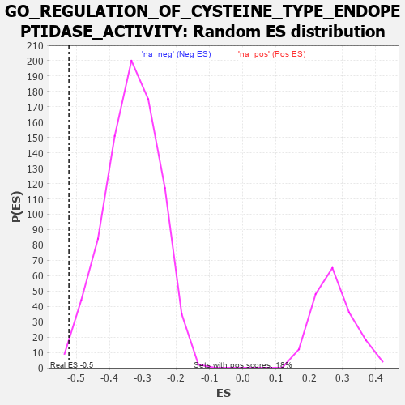

| | | Dataset | 7d |
| Phenotype | NoPhenotypeAvailable |
| Upregulated in class | na_neg |
| GeneSet | GO_REGULATION_OF_CYSTEINE_TYPE_ENDOPEPTIDASE_ACTIVITY |
| Enrichment Score (ES) | -0.5217842 |
| Normalized Enrichment Score (NES) | -1.5689114 |
| Nominal p-value | 0.006119951 |
| FDR q-value | 0.12132817 |
| FWER p-Value | 1.0 |
Table: GSEA Results Summary
 Fig 1: Enrichment plot: GO_REGULATION_OF_CYSTEINE_TYPE_ENDOPEPTIDASE_ACTIVITY
Fig 1: Enrichment plot: GO_REGULATION_OF_CYSTEINE_TYPE_ENDOPEPTIDASE_ACTIVITY
Profile of the Running ES Score & Positions of GeneSet Members on the Rank Ordered List
| PROBE | GENE SYMBOL | GENE_TITLE | RANK IN GENE LIST | RANK METRIC SCORE | RUNNING ES | CORE ENRICHMENT | | 1 | HGF | | | 276 | 0.870 | -0.0131 | No |
| 2 | BAX | | | 387 | 0.711 | -0.0093 | No |
| 3 | HTRA2 | | | 527 | 0.621 | -0.0113 | No |
| 4 | NLE1 | | | 565 | 0.609 | -0.0008 | No |
| 5 | IGBP1 | | | 869 | 0.514 | -0.0263 | No |
| 6 | AKT1 | | | 1040 | 0.476 | -0.0358 | No |
| 7 | AIFM1 | | | 1072 | 0.469 | -0.0281 | No |
| 8 | SRC | | | 1128 | 0.459 | -0.0236 | No |
| 9 | BIRC8 | | | 1615 | 0.372 | -0.0757 | No |
| 10 | CSN2 | | | 1656 | 0.363 | -0.0716 | No |
| 11 | FNIP1 | | | 1798 | 0.338 | -0.0810 | No |
| 12 | RAF1 | | | 2011 | 0.303 | -0.1002 | No |
| 13 | SYK | | | 2186 | 0.278 | -0.1153 | No |
| 14 | REST | | | 2308 | 0.259 | -0.1241 | No |
| 15 | PDCD5 | | | 2885 | 0.169 | -0.1926 | No |
| 16 | MTCH1 | | | 2966 | 0.155 | -0.1988 | No |
| 17 | LEF1 | | | 3037 | 0.144 | -0.2041 | No |
| 18 | GPX1 | | | 3109 | 0.135 | -0.2097 | No |
| 19 | SMAD3 | | | 3303 | 0.105 | -0.2314 | No |
| 20 | DDX3X | | | 3388 | 0.091 | -0.2398 | No |
| 21 | PRDX5 | | | 3547 | 0.068 | -0.2580 | No |
| 22 | FIS1 | | | 3654 | 0.051 | -0.2701 | No |
| 23 | HSF1 | | | 3718 | 0.039 | -0.2771 | No |
| 24 | SFRP2 | | | 4065 | -0.018 | -0.3204 | No |
| 25 | PCID2 | | | 4258 | -0.051 | -0.3433 | No |
| 26 | HIP1 | | | 4485 | -0.092 | -0.3696 | No |
| 27 | CASP1 | | | 4932 | -0.185 | -0.4213 | No |
| 28 | KLF4 | | | 5005 | -0.198 | -0.4254 | No |
| 29 | MMP9 | | | 5108 | -0.227 | -0.4326 | No |
| 30 | GRIN1 | | | 5381 | -0.291 | -0.4597 | No |
| 31 | PRDX3 | | | 5389 | -0.293 | -0.4533 | No |
| 32 | CASP8 | | | 5678 | -0.369 | -0.4804 | No |
| 33 | DAP | | | 5732 | -0.386 | -0.4775 | No |
| 34 | TTBK1 | | | 5969 | -0.460 | -0.4958 | No |
| 35 | RAG1 | | | 6176 | -0.530 | -0.5085 | Yes |
| 36 | TFAP4 | | | 6254 | -0.556 | -0.5044 | Yes |
| 37 | IFT57 | | | 6307 | -0.579 | -0.4965 | Yes |
| 38 | BIRC3 | | | 6366 | -0.603 | -0.4888 | Yes |
| 39 | MALT1 | | | 6432 | -0.634 | -0.4812 | Yes |
| 40 | SOX2 | | | 6477 | -0.652 | -0.4705 | Yes |
| 41 | ROBO1 | | | 6577 | -0.699 | -0.4655 | Yes |
| 42 | RFFL | | | 6674 | -0.749 | -0.4589 | Yes |
| 43 | RNF34 | | | 7040 | -0.963 | -0.4810 | Yes |
| 44 | WDR35 | | | 7357 | -1.225 | -0.4903 | Yes |
| 45 | CASP2 | | | 7442 | -1.322 | -0.4679 | Yes |
| 46 | PDCD6 | | | 7630 | -1.615 | -0.4512 | Yes |
| 47 | BOK | | | 7715 | -1.817 | -0.4165 | Yes |
| 48 | ST18 | | | 7780 | -2.007 | -0.3745 | Yes |
| 49 | TRAF2 | | | 7861 | -2.481 | -0.3226 | Yes |
| 50 | FYN | | | 7881 | -2.622 | -0.2596 | Yes |
| 51 | ARRB1 | | | 7935 | -3.377 | -0.1820 | Yes |
| 52 | XIAP | | | 7947 | -3.696 | -0.0911 | Yes |
| 53 | DAPK1 | | | 7950 | -3.767 | 0.0027 | Yes |
Table: GSEA details [plain text format]

Fig 2: GO_REGULATION_OF_CYSTEINE_TYPE_ENDOPEPTIDASE_ACTIVITY: Random ES distribution
Gene set null distribution of ES for GO_REGULATION_OF_CYSTEINE_TYPE_ENDOPEPTIDASE_ACTIVITY